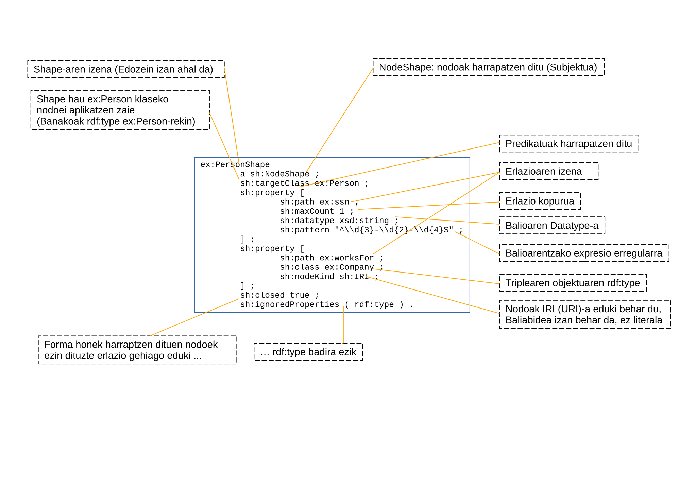

SHACL
Mikel Egaña Aranguren
mikel-egana-aranguren.github.io

Mikel Egaña Aranguren
Mikel Egaña Aranguren
mikel-egana-aranguren.github.io
https://github.com/mikel-egana-aranguren/DBA

SHApes Constraint Language
RDF grafo batek izan beharko lukeen forma definitzen du: zein erlazio, zein nodorekin, zein baliorekin, etab.
RDF datuak forma horren aurka balioztatzen dira, eta datuek forma betetzen duten ala ez adierazten duen txostena sortzen da (ValidationReport, RDFn)
SHACL W3C-ek proposaturiko estandarra da: (W3C)
RDFn definitutako SHACL hiztegiak SHACL lengoaia osoa dauka
RDF hizkuntza bera datuak (RDF), eskema (SHACL) eta emaitzen txostenak (ValidationReport) definitzeko (NoSQL!RDF!)
Ohiko nahasketa: OWL eskema hizkuntza bezala
OWL inferentzia hizkuntza da, ez eskema hizkuntza (*): adibidez, ez du esaten instantzia batek zenbat erlazio izan behar dituen; baizik eta erlazio horiek dituen instantzia aurkitzen badugu, klase jakin batekoa dela ondorioztatzen da
(*) OWLn mundua "itxi" daiteke, baina axioma jakin batzuekin eta ez lehenetsita
Ohiko nahasketa: OWL eskema hizkuntza bezala
SHACL bai dela eskema hizkuntza: adibidez, instantzia batek zenbat erlazio izan behar dituen esaten digu, eta instantzia horrek ez baditu, baliogabea da
Hala ere, SHACL testuinguru batzuetan OWL ordezkatzera eboluzionatzen ari da

sh:NodeShape: grafoaren nodoei buruzko murriztapenak definitzen ditu
sh:PropertyShape: propietateei buruzko murriztapenak definitzen ditu
sh:targetClass, sh:targetNode, sh:targetSubjectsOf, sh:targetObjectsOf: zein nodo balioztatu
sh:path: zein propietate balioztatu
sh:minCount: balioen gutxieneko kopurua
sh:maxCount: balioen gehieneko kopurua
ex:PersonShape a sh:NodeShape ;
sh:targetClass ex:Person ;
sh:property [
sh:path ex:name ;
sh:minCount 1 ;
sh:maxCount 1
] .sh:class: balioa klase baten instantzia izan behar da
sh:datatype: balioak datatype zehatz bat izan behar du
sh:nodeKind: nodo mota (IRI, Literal, BlankNode)
sh:property [
sh:path ex:birthDate ;
sh:datatype xsd:date ;
sh:maxCount 1
] .sh:in: balioa zerrenda jakin batean egon behar da
sh:hasValue: balio zehatz bat existitu behar da
sh:minExclusive, sh:maxExclusive: zenbakizko tarteak
sh:minInclusive, sh:maxInclusive: zenbakizko tarte inklusiboak
sh:minLength, sh:maxLength: string-en luzera
sh:pattern: bete beharreko adierazpen erregularra
sh:languageIn: literaletarako baimendutako hizkuntzak
sh:uniqueLang: hizkuntza bakoitza behin bakarrik ager daiteke
sh:property [
sh:path rdfs:label ;
sh:uniqueLang true
] .sh:not: shape baten ezeztapena
sh:and: shape guztiak bete behar dira
sh:or: gutxienez shape bat bete behar da
sh:xone: zehazki bat bete behar da
sh:node: balioak beste shape bat bete behar du
sh:property: beste murriztapenak barnean definitzen ditu
sh:qualifiedValueShape + sh:qualifiedMinCount/MaxCount: zenbat baliok bete behar duten shape bat
Baliozkotze konplexuak eta shapeen konposizioa ahalbidetzen ditu
sh:closed true: deklaratutako propietateak bakarrik onartzen dira
sh:ignoredProperties: salbuespen propietateen zerrenda
ex:PersonShape a sh:NodeShape ;
sh:targetClass ex:Person ;
sh:closed true ;
sh:ignoredProperties ( rdf:type ) ;
sh:property [
sh:path ex:name
] .sh:severity: urraketa baten larritasun maila
sh:Violation (lehenetsia): errore kritikoa
sh:Warning: abisua
sh:Info: informazioa
Derrigorrezko baliozkotzeak eta gomendioak bereizteko aukera ematen du
sh:message: urraketetarako mezu deskribatzailea
Hizkuntza etiketak erabiliz eleanitza izan daiteke
sh:property [
sh:path ex:age ;
sh:datatype xsd:integer ;
sh:minInclusive 0 ;
sh:message "La edad debe ser un entero no negativo"@es ;
sh:message "Age must be a non-negative integer"@en
] .sh:path-ek bide konplexuak onartzen ditu:
Sekuentzia: ( ex:parent ex:age ) - gurasoa.adina
Aukera: [ sh:alternativePath ( ex:email ex:phone ) ]
Alderantzizkoa: [ sh:inversePath ex:knows ]
Zero edo gehiago: [ sh:zeroOrMorePath ex:parent ]
Bat edo gehiago: [ sh:oneOrMorePath ex:subClassOf ]
Hedapen aurreratua: SPARQL query-ekin egindako baliozkotzeak
sh:sparql-ek arbitrarioki konplexuak diren murriztapenak ahalbidetzen ditu
SHACL Core baino adierazkorragoa da, baina garestiagoa
Arrazoiketa konplexua behar duten baliozkotzeetarako erabilgarria
ex:UniqueEmailShape a sh:NodeShape ;
sh:targetClass ex:Person ;
sh:sparql [
sh:message "Email must be unique" ;
sh:select """
SELECT $this ?email WHERE {
$this ex:email ?email .
?other ex:email ?email .
FILTER ($this != ?other)
}
"""
] .Baliozkotzearen emaitza RDFn (NoSQL!RDF!)
sh:ValidationReport, sh:conforms-ekin (true/false)
sh:ValidationResult urraketa bakoitzerako:
SHACL Playground: online editorea
pySHACL: Python balioztatzailea
Apache Jena SHACL: Java
GraphDB, Stardog: SHACL integratuta
Errepositorioa sortu SHACL aukera aktibatuz
Shape-ak grafo espezifiko batean daude:
[Adibideak/ex1_person]